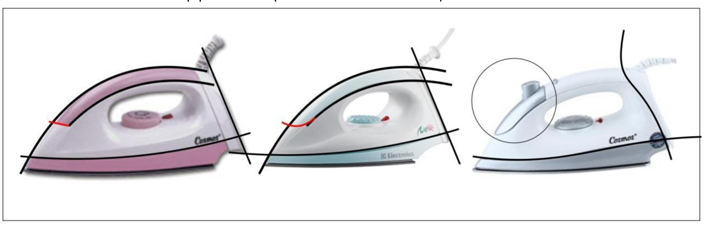
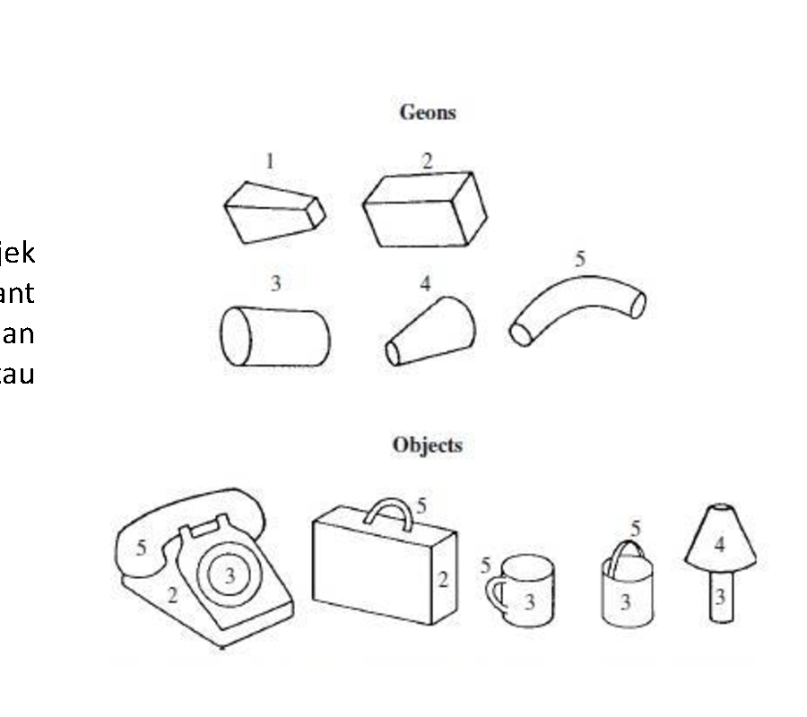
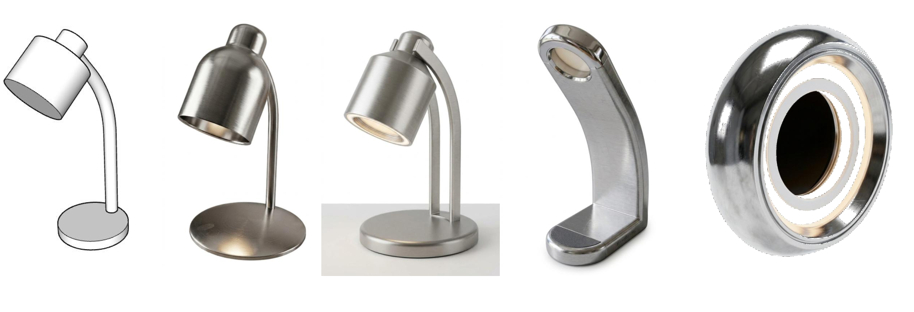

Landasan Yuridis dan Definisi Statutory 4 Elemen Pokok
Dalam khazanah hukum kekayaan intelektual modern, Desain Industri memegang kedudukan istimewa yang menjembatani seni murni dengan produksi massal industri. Jika hukum Paten melindungi invensi teknologi yang memecahkan persoalan praktis, dan hukum Merek melindungi reputasi asal barang, maka Desain Industri secara khusus mengawal estetika rupa kasat mata.
Di Indonesia, kepastian hukum ini ditegakkan melalui Pasal 1 angka 1 Undang-Undang No. 31 Tahun 2000 tentang Desain Industri:
“Desain Industri adalah suatu kreasi tentang bentuk, konfigurasi, atau komposisi garis atau warna, atau garis dan warna, atau gabungan daripadanya yang berbentuk tiga dimensi atau dua dimensi yang memberikan kesan estetis dan dapat diwujudkan dalam pola tiga dimensi atau dua dimensi serta dapat dipakai untuk menghasilkan suatu produk, barang, komoditas industri, atau kerajinan tangan.”
Klausul tersebut mengukuhkan bahwa perlindungan desain industri bukan monopoli acak, melainkan hak eksklusif yang bertumpu pada empat perwujudan visual yang nyata dan terukur.
Anatomi Elemen Bentuk (Shape) 3D: Kurvatur, Siluet, dan Doktrin Fungsional
Bentuk (shape) adalah wujud fisik tiga dimensi yang memiliki massa, volume, panjang, lebar, dan tinggi. Dalam proses pemeriksaan substantif di DJKI maupun kantor paten internasional seperti EUIPO dan USPTO, penilaian bentuk bertumpu pada dua sumbu evaluasi:
- Siluet dan Profil Kontur: Garis tepi terluar yang tampak saat produk diamati dari berbagai sudut proyeksi (perspektif, tampak depan, atas, dan samping).
- Kelengkungan Permukaan (Surface Curvature): Transisi antara bidang datar dan bidang melengkung, seperti kemulusan kurva kontinu yang membentuk gaya khas produk.
Pasal 4 UU No. 31 Tahun 2000 secara tegas melarang pemberian hak desain industri terhadap bentuk yang semata-mata ditentukan oleh fungsi teknis. Jika sebuah bentuk dibuat semata-mata agar pas dengan komponen lain (seperti gerigi roda gigi mekanis atau pin steker listrik), maka bentuk tersebut berada di ranah paten atau domain publik dan tidak boleh dimonopoli melalui desain industri.
Anatomi Elemen Konfigurasi: Relasi Spasial Antar-Komponen
Perbedaan antara bentuk dan konfigurasi sering kali menjadi perdebatan menarik dalam persidangan niaga. Jika bentuk merujuk pada kontur luar dari satu benda tunggal, maka konfigurasi (configuration) merujuk pada penataan spasial, susunan, atau relasi perletakan dari beberapa komponen yang membentuk satu produk utuh.
Sebagai contoh nyata, perhatikan modul kamera pada punggung ponsel pintar. Lingkaran lensa kamera dan lampu kilat adalah bentuk geometri yang sudah ada sejak dahulu kala. Namun, penataan letak tiga lingkaran dalam formasi segitiga asimetris dengan jarak proporsional tertentu di dalam bingkai kaca sudut kiri atas merupakan sebuah kreasi konfigurasi yang memiliki kebaruan estetis.
Pemeriksa Desain Industri akan memeriksa apakah relasi penataan tersebut menghasilkan kesan visual yang berbeda nyata dibandingkan dengan susunan komponen yang telah ada pada basis data seni terapan terdahulu (prior art).
Komposisi Garis: Irama Linier 2 Dimensi dan Tekstur Rusuk 3 Dimensi
Garis adalah elemen ekspresi yang sangat kuat. Dalam hukum desain industri, komposisi garis dapat diwujudkan dalam dua bentuk utama:
Pola grafis garis sejajar (pinstripe), anyaman geometris pada ubin keramik, motif batik garis, atau pola sablon linier pada kain tekstil dan kemasan produk.
Pola rusuk timbul paralel pada koper perjalanan aluminium, alur striasi pada pegangan alat tulis, atau sirip dekoratif pada grille depan kendaraan bermotor.
Kunci pengujian komposisi garis terletak pada kata “komposisi”, yang mensyaratkan adanya susunan teratur atau ritme berulang. Satu garis lurus tunggal tanpa konteks dekoratif tidak dianggap sebagai komposisi yang layak mendapatkan hak monopoli.
Komposisi Warna dan CMF: Mengapa Hukum Menolak Monopoli Warna Tunggal
Salah satu pertanyaan yang paling sering muncul dari para pemohon pendaftaran desain adalah: “Bisakah saya mendaftarkan warna merah pada botol saya?”
Jawabannya adalah tidak, jika warna tersebut diajukan sebagai warna tunggal yang berdiri sendiri tanpa komposisi. Undang-Undang No. 31 Tahun 2000 mensyaratkan frasa “komposisi warna”, yang berarti perpaduan atau kombinasi dari setidaknya dua warna atau lebih.
Spektrum warna di alam semesta sangat terbatas. Jika seorang pengusaha diizinkan memonopoli satu warna tunggal pada produk komoditas tertentu, maka persaingan usaha yang sehat akan lumpuh karena pengusaha lain tidak dapat lagi menggunakan warna tersebut. Warna hanya dilindungi apabila dipadukan dalam komposisi kontras (seperti skema dual-tone) atau zonasi warna yang teratur dan terikat pada bentuk produk.
Teori Kebaruan Visual dan Pendekatan Pengukurannya
Disarikan dari materi Persoalan Kebaruan Visual dan Pengukurannya oleh Dr. Andry, M.Sn pada Kegiatan Peningkatan Pemahaman Bagi Jabatan Fungsional Pemeriksa Desain Industri DJKI Kementerian Hukum di Jakarta.
Kebaruan visual bukanlah sekadar predikat abstrak atau klaim subjektif sepihak dari pendesain. Dalam keilmuan desain industri dan metodologi pemeriksaan kekayaan intelektual, kebaruan merupakan fungsi relasional: sejauh mana suatu artefak menyimpang dari artefak referensi dalam ruang desain kategori sejenis.
1. Analisis Formalistik terhadap Kontur dan Massa Bentuk
Teori formalisme membedah produk ke dalam unsur visual (titik, garis, bidang, massa/bentuk 3D, warna, dan tekstur) yang dikelompokkan ke dalam jenis organis (patah vs lengkung) atau geometris (persegi vs kurva). Unsur-unsur ini diatur dengan pola susunan tertentu (acak, teratur, analog, atau komplementer) untuk menghasilkan unsur perseptual berupa kesatuan, keselarasan, keseimbangan, arah dan gerak, serta irama visual.

Gambar: Analisis formalistik pertemuan garis punggung bodi, sudut kemiringan moncong, dan kurvatur pegangan pada setrika listrik (Cosmos, Electrolux) untuk mendeteksi kebaruan visual.
2. Teori GEON: Pengenalan Objek Melalui Komponen Primitif
Merujuk teori Recognition-by-Components (RBC) yang dirumuskan Irving Biederman (1987), sistem kognisi manusia mengidentifikasi objek tiga dimensi melalui konfigurasi bagian-bagian geometris primitif yang invarian terhadap sudut pandang (*geons*).

Objek seperti telepon, cangkir, tas koper, dan botol didekonstruksi ke dalam silinder, kerucut terpancung, balok, dan siku lengkung.
3. Prinsip MAYA (Most Advanced, Yet Acceptable)
Diformulasikan oleh Raymond Loewy serta divalidasi oleh Hekkert et al. (2003) dan Blijlevens et al. (2017): preferensi estetik manusia timbul dari titik temu antara sesuatu yang baru (*novel*) dengan sesuatu yang masih dikenali (*typical*). Desain yang terlalu radikal berisiko gagal dipahami, sementara desain yang terlalu tipikal kehilangan daya tarik kebaruan.

Gambar: Evolusi bentuk lampu meja yang bergerak dari tipikal kap mangkuk konvensional menuju inovasi cincin torus melingkar modern tanpa memutus fungsi dasarnya sebagai penerangan meja.
4. Mazhab Pengukuran: Penilaian Subjektif vs Objektif Komputasional
CAT (Consensual Assessment Technique): Gold standard Amabile (1982) dengan minimal 7 penilai pakar independen.
CPSS (Creative Product Semantic Scale): O'Quin & Besemer (1989) mengukur Novelty, Resolution, dan Elaboration. Contoh: Ferrari Luce (skor 6,4/7,0) vs Tesla Model S (skor 4,8/7,0).
Divergensi Kullback-Leibler (KL): Menghitung perbedaan distribusi Gaussian curvature bentuk 3D antara acuan tipikal dan target baru (korelasi R² = 0,86 dengan persepsi manusia - Sasaki et al., 2022).
Local Outlier Factor (LOF): Mendeteksi pencilan kerapatan semantik vektor untuk menyaring ide desain yang sangat unik secara otomatis.
3D Printing: Realisasi Desain, Akselerasi R&D & Jaminan Produksi Berulang (Mass Production)
“...dapat diwujudkan dalam pola tiga dimensi atau dua dimensi serta dapat dipakai untuk menghasilkan suatu produk, barang, komoditas industri, atau kerajinan tangan yang dapat diproduksi secara berulang.”
Salah satu syarat konstitutif yang membedakan Desain Industri dari seni murni (Hak Cipta) adalah unsur manufakturabilitas dan reproduksibilitas massal (*repeatability*). Sebuah gambar atau sketsa estetik di atas kertas tidak serta-merta memenuhi syarat desain industri jika wujud tersebut mustahil diproduksi secara berulang ratusan ribu unit dalam lini pabrik. Di sinilah teknologi pencetakan tiga dimensi (*additive manufacturing / 3D printing*) memegang peran sentral dalam praktik industri modern.
Mengubah representasi kurva digital CAD (NURBS) ke bentuk nyata untuk menguji proporsi, distribusi volume, dan stabilitas gravitasi secara taktil di tangan manusia, serta memverifikasi 7 tampak standar tanpa bias rendering layar komputer.
Memangkas durasi riset dari minggu/bulan menjadi 4–12 jam per siklus. Desainer dapat mencetak 3 hingga 5 alternatif bentuk dan ergonomi dalam satu hari (*rapid physical A/B testing*) sebelum pembekuan desain (*design freeze*).
Memvalidasi parameter cetakan injeksi plastik (*injection mold*): sudut kemiringan dinding 1°–3° (*draft angle*), lokasi garis pisah (*parting line*), ketebalan seragam (*uniform wall thickness*), serta toleransi sambungan (*snap-fit 0,2 mm*).
Pembuatan cetakan perkakas baja permanen (*hard tooling mold*) bernilai ratusan juta hingga miliaran rupiah. Kesalahan desain bentuk atau undercut yang terlanjur dipotong pada cetakan baja akan mengakibatkan kerugian finansial yang sangat besar. Prototipe 3D print memberikan kepastian mutlak bahwa produk dapat diproduksi berulang kali (*mass production*) dengan kualitas yang identik tanpa deviasi bentuk.
Metodologi Pengujian Kebaruan dan Standar Informed User
Pasal 2 Undang-Undang No. 31 Tahun 2000 menegaskan bahwa hak desain industri hanya diberikan untuk desain yang baru. Desain dianggap baru apabila pada Tanggal Penerimaan, desain tersebut tidak sama dengan pengungkapan yang telah ada sebelumnya di seluruh dunia.
Dalam menguji kebaruan, Pemeriksa Desain Industri menerapkan tahapan metodologis sebagai berikut:
- Penelusuran Prior Art: Menelusuri pangkalan data DJKI (PDKI) dan pangkalan data internasional WIPO Global Design Database berdasarkan Klasifikasi Locarno yang relevan.
- Pemeriksaan Kesan Keseluruhan (Overall Impression Test): Menilai apakah perbedaan desain yang dimohonkan dengan desain terdahulu memberikan kesan estetis yang berbeda secara nyata bagi pengamat.
- Kacamata Pengguna Berpengetahuan (Informed User): Penilaian tidak didasarkan pada pandangan ahli teknik yang mencari perbedaan mikroskopis, melainkan pada pandangan konsumen berpengetahuan yang memahami ragam produk di pasar tersebut.
- Pemberian Masa Tenggang (Grace Period Pasal 5): Jika pendesain telah memamerkan karyanya dalam pameran resmi atau penelitian hingga 6 bulan sebelum tanggal penerimaan, pengungkapan tersebut tidak merusak kebaruan desainnya.
Matriks Komparasi 4 Elemen Pokok Desain Industri
Tabel ringkasan berikut merangkum batas yuridis, objek perlindungan, dan tolok ukur pengujian kebaruan untuk masing-masing elemen:
| Elemen Pokok | Dimensi | Fokus Perlindungan | Tolok Ukur Kebaruan | Pengecualian / Larangan |
|---|---|---|---|---|
| Bentuk (Shape) | 3 Dimensi | Massa, volume, siluet, dan kontur kurvatur fisik | Siluet tampak luar & proporsi kurva | Bentuk mekanis murni (Pasal 4) |
| Konfigurasi | 3D / 2D Spasial | Tata letak & relasi spasial antar-komponen | Distribusi khas susunan bagian | Susunan acak tanpa pola estetis |
| Komposisi Garis | 2D & 3D | Irama linier, striasi rusuk, pola ornamen | Ritme dan repetisi garis teratur | Satu garis lurus tunggal polos |
| Komposisi Warna | 2D / 3D Permukaan | Paduan ≥ 2 warna, skema dual-tone, harmoni | Zonasi warna teratur & kontras serasi | Warna tunggal tanpa bentuk/pola |
| Gabungan Daripadanya | 2D / 3D Holistik | Integrasi bentuk, letak, garis, dan warna serasi | Kesan Keseluruhan (Overall Impression) | Bertentangan dengan ketertiban umum |
Daftar Pustaka & Atribusi Sumber Otoritatif
Redaksi IDE Indonesia (Industrial Design Examiner) menyampaikan rasa hormat dan terima kasih kepada para penyusun undang-undang, pemeriksa di Direktorat Jenderal Kekayaan Intelektual, serta para narasumber dan akademisi desain produk dunia atas literatur yang menjadi rujukan utama penyusunan monograf ini.
Andry. (2026). Persoalan Kebaruan Visual dan Pengukurannya: Memahami Kebaruan Visual. Disampaikan pada Kegiatan Peningkatan Pemahaman Bagi Jabatan Fungsional Pemeriksa Desain Industri DJKI Kementerian Hukum, Mercure Convention Center Ancol, Jakarta.
Republik Indonesia. (2000). Undang-Undang Republik Indonesia Nomor 31 Tahun 2000 tentang Desain Industri. Lembaran Negara RI Tahun 2000 No. 243. Jakarta: Sekretariat Negara.
Direktorat Jenderal Kekayaan Intelektual (DJKI). (2021). Manual Pemeriksaan Substantif Desain Industri: Penilaian Kebaruan dan Karakter Estetis. Jakarta: Kementerian Hukum RI.
World Intellectual Property Organization (WIPO). (2023). Guide to the International Registration of Industrial Designs under the Hague Agreement. Geneva: WIPO Publication.
European Union Intellectual Property Office (EUIPO). (2022). Common Practice on the Graphical Representations of Designs (CP6). Alicante: EUIPO.
United States Patent and Trademark Office (USPTO). (2024). Manual of Patent Examining Procedure (MPEP): Chapter 1500 Design Patents. Alexandria, VA: USPTO.
Bently, L., Sherman, B., Gangjee, D., & Johnson, P. (2022). Intellectual Property Law (6th ed.). Oxford: Oxford University Press.
Kolom Komentar & Telaah Rekan Sejawat
Diskusikan metodologi 7 proyeksi ortogonal, draft angle cetak 3D untuk injeksi massal, serta telaah hukum kebaruan Pasal 2 UU 31/2000 bersama para pemeriksa DJKI, akademisi, dan praktisi manufaktur di forum interaktif buletin utama.